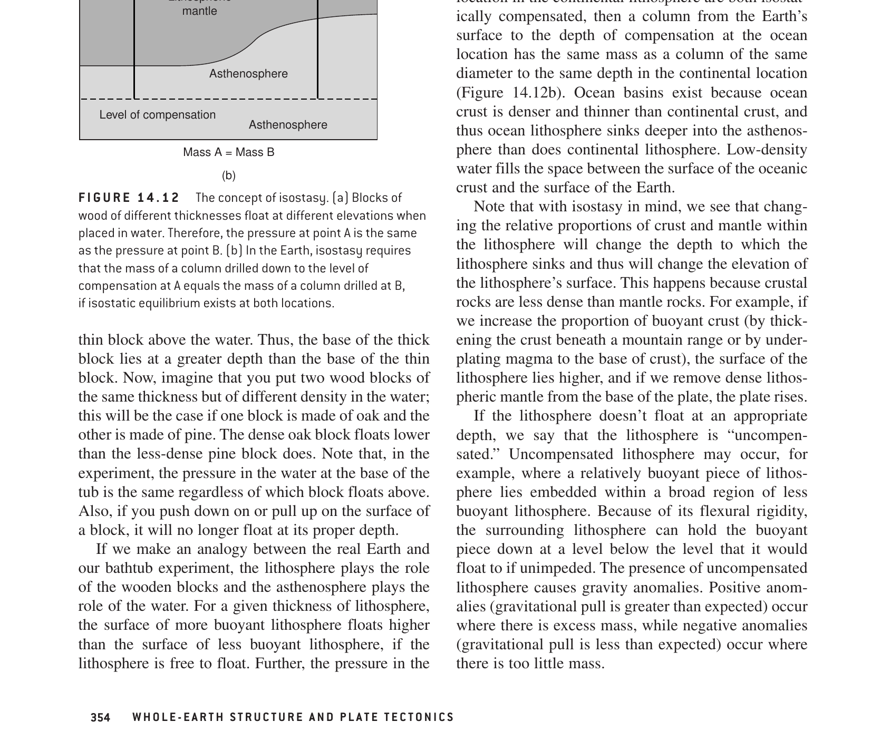

The correct option is (d) 20%.
Under Sir George Biddell Airy's hypothesis of isostasy (1855), the continental crust has a uniform density ($\rho_c$) and floats in hydrostatic equilibrium upon a denser, fluid-like mantle ($\rho_m$). Just like an iceberg floating in seawater:
Hence, if the crustal column thickness is doubled ($\Delta T = T_0$), the resulting mountain elevation increases by approximately 20% of that crustal increment, while 80% forms the compensating root.

Consider a reference continental crust of thickness $T_0$ at sea level ($h = 0$).
Let:
At the depth of compensation (chosen at or below the base of the deepest mountain root, $D_{\text{comp}} = T_0 + r$):
The pressure at this level is the integrated weight per unit area of overlying rocks:
Canceling gravitational acceleration $g$ and expanding:
Subtracting $\rho_c T_0$ from both sides:
Since the total crustal thickening is $\Delta T = h + r$:
Solving for mountain elevation $h$:
Substituting canonical crustal and mantle densities:
If $\rho_c = 2.67\text{ g/cm}^3$ and $\rho_m = 3.27\text{ g/cm}^3$ (standard Woollard values):
If $\rho_c = 2.70\text{ g/cm}^3$ and $\rho_m = 3.40\text{ g/cm}^3$:
In all standard geodynamical formulations, the fraction of crustal doubling that manifests as surface mountain height is approximately 20% (1/5th to 1/6th), while the root accounts for the remaining 80% (4/5th to 5/6th).
| Parameter | Airy Model (1855) | Pratt Model (1859) |
|---|---|---|
| Crustal Density ($\rho$) | Constant ($\rho_c = \text{constant} \approx 2.7\text{ g/cm}^3$) | Variable ($\rho$ decreases with increasing mountain height) |
| Depth of Crustal Base | Variable (deep roots beneath mountains, thin beneath oceans) | Constant (horizontal level of compensation $D$) |
| Physical Analogy | Icebergs or wooden blocks of varying thickness in water | Blocks of different metals (iron, zinc, lead) in liquid mercury |
| Crustal Doubling Response | ~20% surface elevation, ~80% downward root | Requires density halving to maintain equal compensation depth |
| Geological Reality | Dominates continental orogens (e.g., Himalayas, Alps, Andes) | Applies to mid-ocean ridges & thermal buoyancy (hot, low-density mantle) |
William Lowrie, Fundamentals of Geophysics (Cambridge University Press, Section 2.7: Isostasy):
"In the Airy model, a mountain of height h requires a crustal root r given by r = h · ρc / (ρm - ρc). With ρc = 2.7 g/cm³ and ρm = 3.3 g/cm³, r ≈ 4.5 h. Thus, total crustal thickening ΔT = h + r = 5.5 h. Consequently, the mountain height h represents only h / ΔT = 1 / 5.5 ≈ 18% (~20%) of the total crustal column thickening."
Donald L. Turcotte & Gerald Schubert, Geodynamics (Cambridge University Press):
"Because the density contrast (ρm - ρc) is only about 0.6 g/cm³ compared to ρm ≈ 3.3 g/cm³, roughly 82% of the crustal thickening forms a root, and only ~18% creates mountain topography."